Goshogawara
Goshogawara · Aomori
Goshogawara
Highlighted on the Aomori map.
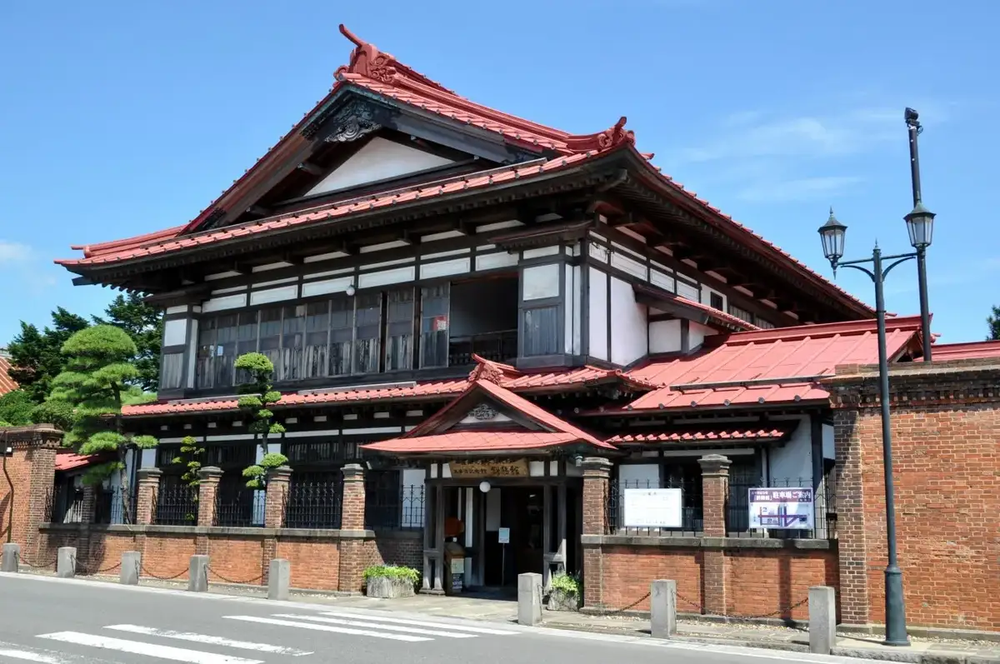
Stay
ホテルサンルート五所川原
Hoterusanruuto Goshogawara
ホテルサンルートパティオ五所川原
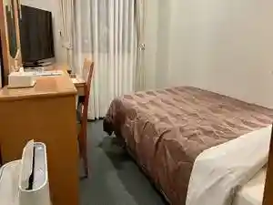
Hoterusanruutopateio Goshogawara
パークイン五所川原エルムシティ
Paakuin Goshogawara Erumushitei
GuestHouseつがるのへっちょ
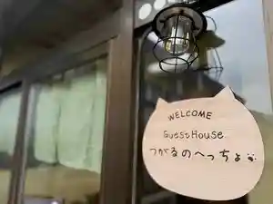
Guesthouse Tsugarunohetcho
民泊宿屋 ＰｉｔｔＩＮＮ 体験型施設
Minpaku Yadoya P I T T I N N Taiken Kata Shisetsu
Dining
入〆そばや 公園店
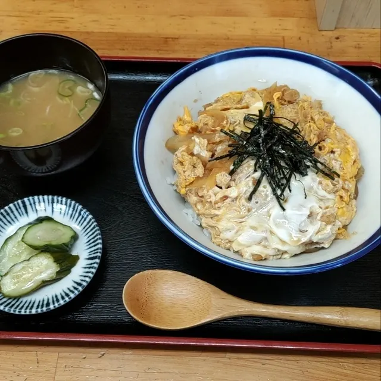
Nyuu (Sime) Sobaya Kouen Mise
李朝
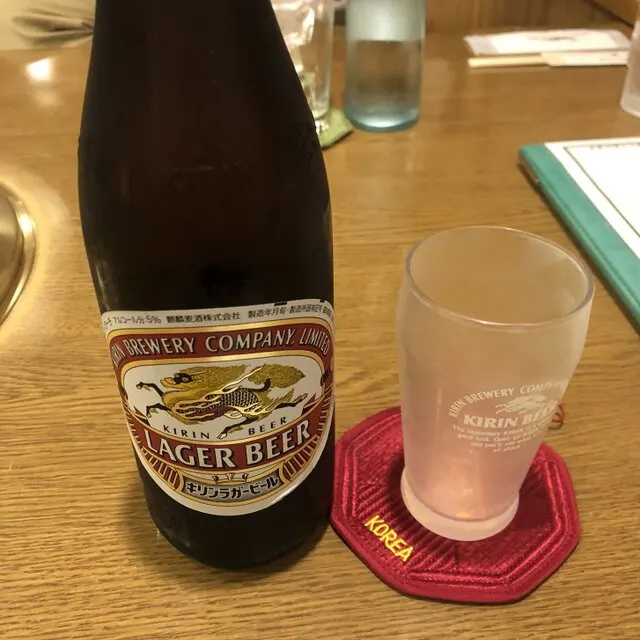
Richou
津軽五所川原駅
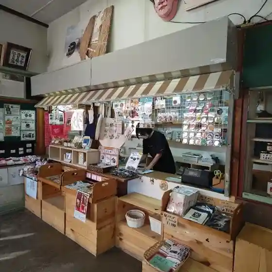
Tsugaru Goshogawaraeki
オレンジ カンパニオ
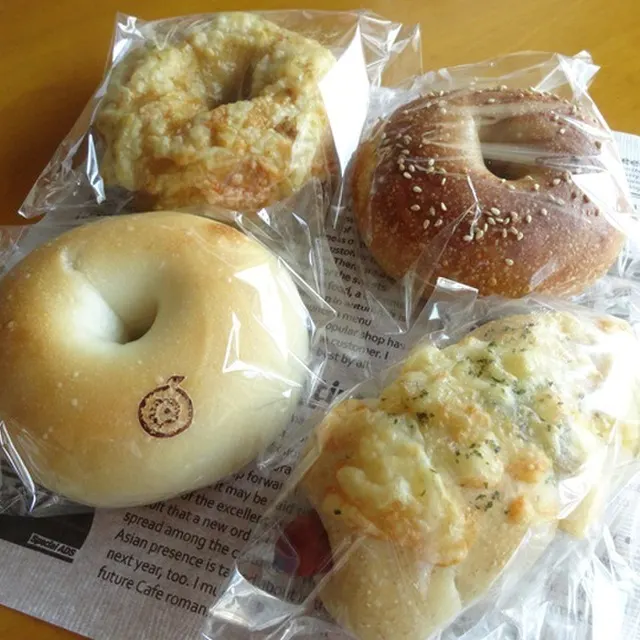
Orenji Kanpanio
北海道うまいもの館 五所川原エルム店
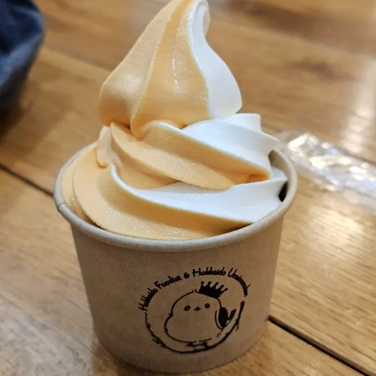
Hokkaidou Umaimono Kan Goshogawara Erumu Mise
セブンイレブン 五所川原鎌谷町店
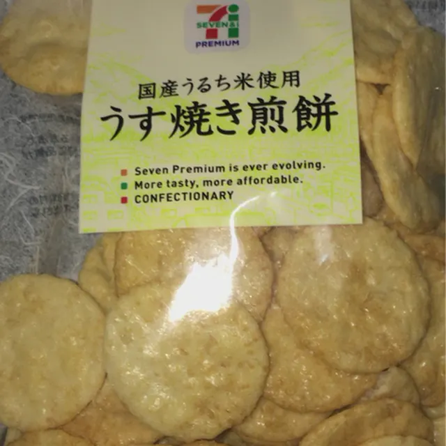
Sebun'Irebun Goshogawara Kamagaya Machi Mise
和食処 花里
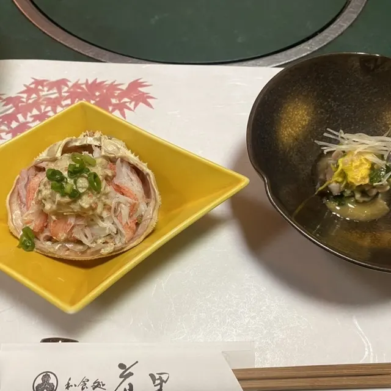
Washoku Tokoro Hanazato
羊の神様 五所川原店
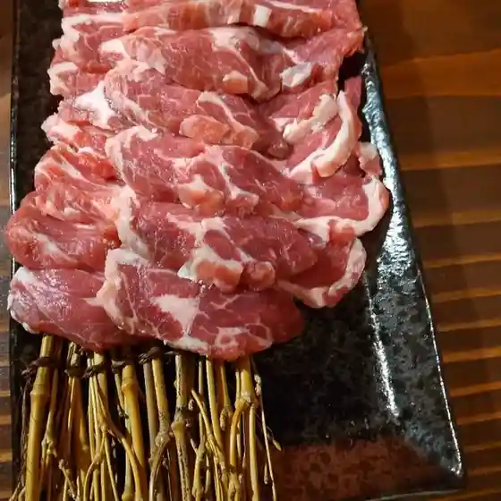
Hitsuji No Kamisama Goshogawara Mise
ドランクモンキー
Dorankumonkii
ねこねこ食パン 青森エルム店
Nekoneko Shoku Pan Aomori Erumu Mise
叶家
Kanou Ie
花月
Kagetsu
新宿さぼてん 五所川原エルム店
Shinjuku Saboten Goshogawara Erumu Mise
カルネドール
Karunedooru
そば処 山形や
Soba Tokoro Yamagata Ya
Bar sugar tree
Bar Sugar Tree
メロス食堂
Merosu Shokudou
ザ ポーラーグリル
Za Pooraaguriru
イタリアン・トマト カフェジュニア 五所川原エルム店
Itarian Tomato Kafejunia Goshogawara Erumu Mise
無添くら寿司 五所川原店
Mu Soe Kura Sushi Goshogawara Mise
焼肉冷麺やまなか家 五所川原店
Yakiniku Reimen Yamanaka Ie Goshogawara Mise
酒家 みらくRu
Shuka Miraku Ru
十三湖しじみラーメンの店 とさや
Juusan Mizuumi Shijimi Raamen No Mise Tosaya
グリル ナリマン
Guriru Nariman
Sights
Lake Jusanko
Lake Jusanko is seven kilometers from north to south, five kilometers from east to west, and 31.4 kilometers around its shoreline, making it the third largest lake in Aomori Prefecture.
Kawakura Sai-no-Kawara Jizo Festival
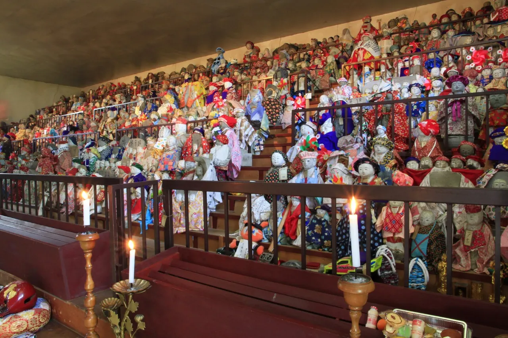
Annual festival at a hilltop Jizo hall near Ashino Park, known for itako mediums and about 2,000 Jizo statues.
Kintaro Onsen
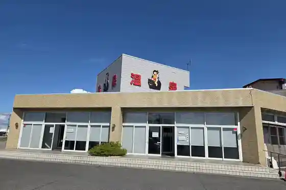
Hot spring bathhouse decorated with Kintaro paintings, popular for its cold plunge and alternating hot-cold bathing.
Hirota Onsen
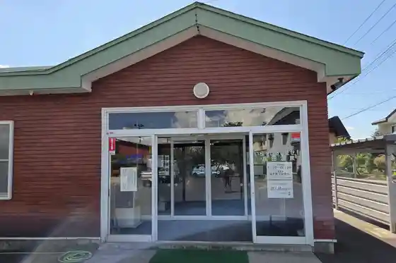
Hot spring with a hot bath and cold plunge for alternating bathing, plus separate family baths.
Wakimoto Iwakisan Shrine Grand Festival
Mountain pilgrimage on Mt. Moya each lunar August 1 to pray for good harvests and catches; the public can join.
Mt. Moya
152 m hill in Wakimoto worshipped as Wakimoto Iwakisan Shrine and said to be the sister of Mt. Iwaki.
Onuma Park
Nature park below the Karakawa Castle ruins with a lakeside path and a long covered bridge.
Dazai Osamu Memories Plaza
Small rest plaza in Kanagi on the road from Dazai's birthplace Shayokan to his old school, with plaques of his works.
Nandaiji Temple
Family temple of Dazai Osamu's Tsushima family, which once ran a Sunday school and lent books to children.
Kase Yakko Odori Dance Lesson
Short lesson in Kase's traditional Yakko dance taught by local women, with a drink and souvenir.